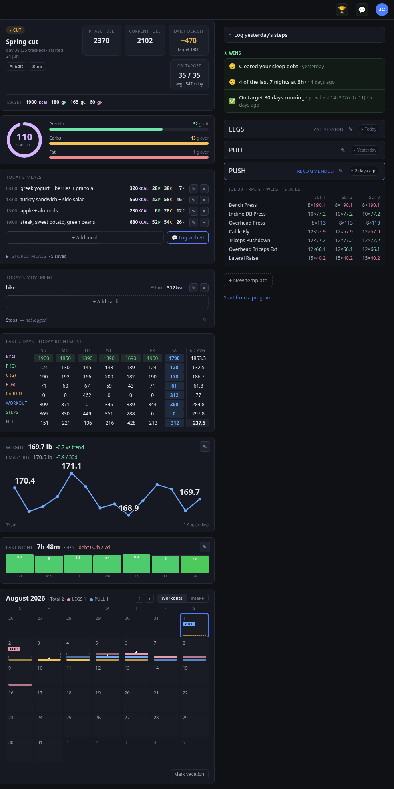
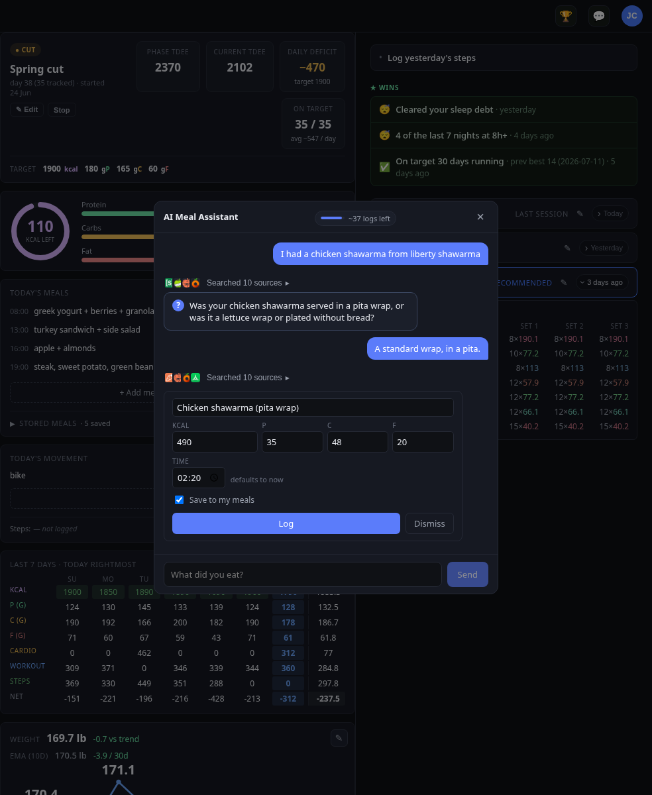
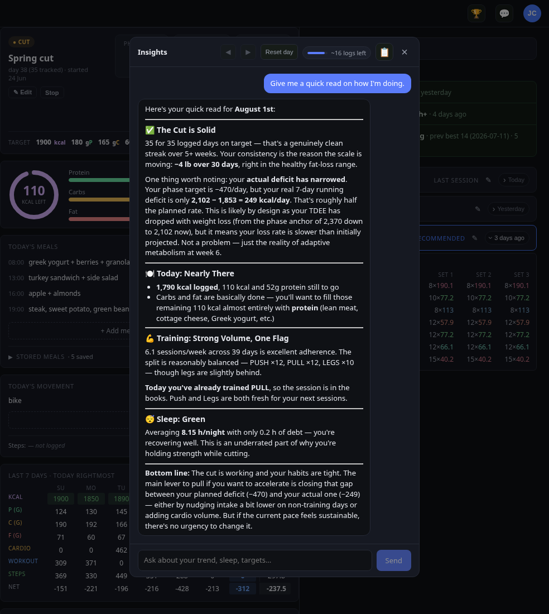

Almanac · self-hosted fitness record
Almanac keeps an accurate account of what you eat, lift, weigh, and sleep, then hands it to the assistant you already use. Ask how your cut is going or what to train today, and the answer comes from your own numbers instead of a guess.
One record, two ways in
Your assistant reads and writes it over MCP; the dashboard does everything too. One API, one SQLite file, so both sides see the same numbers.

Answers from your own numbers
Any chatbot can guess. Yours counts what you actually logged, so it knows what's recovered and where the cut stands.
used 2 tools
PUSH is the clear call for tomorrow.
Chest, front delts, triceps, and abs are all in the prime window (~94h since last hit) — ideal timing, full output expected. No conflicts, no too-soon groups.
LEGS is available too (quads/hams/calves recovered at ~49h) but the timing signal is weak — acceptable, not prime. Fine to swap the order, but PUSH is the better pick today.
PULL is a hard no — you just finished it. Back, biceps, traps, forearms, rear delts all need another 24–48h minimum.
get today context
Solid day. Here's where you stand:
Nutrition — 1,790 / 1,900 kcal, on track with 110 left. Protein's at 142g of 180 — room for a high-protein snack before bed.
Training — PULL done today, your 4th workout this week. Back, biceps, traps, forearms all fully depleted, which is exactly right.
Weight — 169.2 lb this morning; trend 170.2 and drifting down, about 1.6 lb over the past 17 days.
Energy balance — net −438 kcal against your measured TDEE of ~2,230. Day 39 of the Spring cut. Everything's logged, zero nudges.
Built in, if you don't run your own
Two chat surfaces are built in, so the AI is there even if you never connect an outside agent.


What it keeps track of
Meals, macros, and alcohol. Once it has enough data, your TDEE is back-calculated from what you actually ate and how your weight moved, not a formula.
A smoothed trend that sees through day-to-day water swings, with a usable read on direction after just a couple of weigh-ins.
Workout templates, per-muscle recovery timing, strength PRs, and a suggested next session based on what has actually recovered.
Sleep hours, quality, and a running debt. Daily steps count toward your energy balance as everyday movement.
Run a cut, bulk, or maintenance phase with targets and adherence. Mark time off so a vacation doesn't drag your averages.
Open any past day to review or fix it, on a month view that flips between workouts and intake.
Self-hosted by design
It runs on your own hardware. Your health data stays on a machine you control, which is what makes it safe to point an assistant at.
It's a Docker Compose stack behind oauth2-proxy, so you can sign in with Google, GitHub, or any OIDC provider. Assistants connect with a token or the MCP OAuth flow. The deploy guide covers nginx, TLS, and the stack end to end.